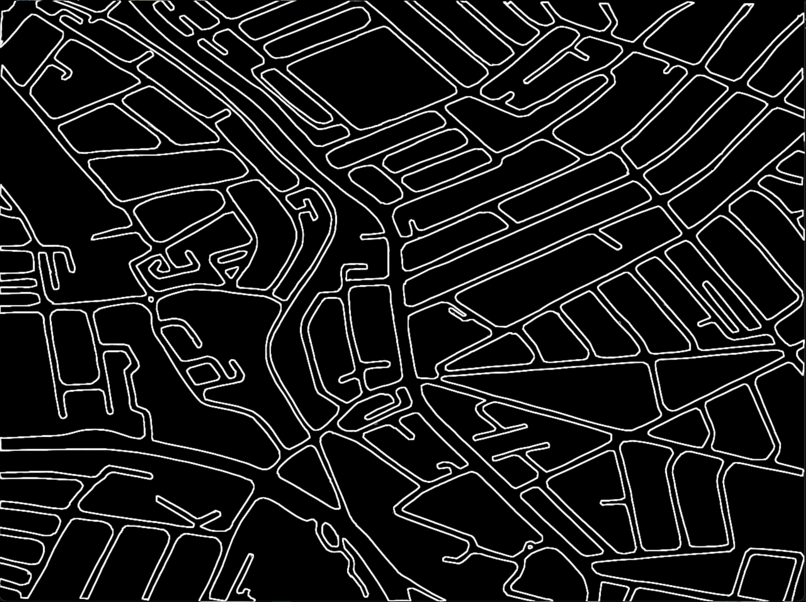

Find and scan each
location's hidden QR code
using the postcodes
and what3words locations
to learn a bit about
the history of this
neighbourhood...
Completed in 1972 and designed by architect Ernő Goldfinger, Trellick Tower is a brutalist residential tower block originally built as part of the council’s social housing scheme.
Its controversial yet rich history and unmistakable appearance have since made it a legendary neighbourhood icon.
Tap to continue.
The tower’s spatially efficient design consists of two distinct sections: the residential block and the amenities tower. Connected via floating bridges, the amenities tower houses the lift, stairs, and service rooms — as well as a large, now-disused boiler room.
Still containing its original machinery, the boiler room has been obsolete for the past fifty years and is completely shut off to both residents and the public, despite its potential as a powerful communal space.
Tap to continue.
Although Trellick Tower’s Grade II* listed status likely makes it difficult to renovate spaces containing old machinery, it raises an interesting question: why can’t historical spaces continue to serve the present, rather than being hidden away and forgotten?
Learn more:
trellicktower.com/history
RIBA — Trellick Tower Turns 50
WhiteMAD — Brutalist Icon
Tap to enter map.
You are standing by one of the entrances to Meanwhile Gardens, a green space created in 1976 through direct community effort.
Its founder, Jamie McCollough, was a local artist and engineer who wanted to transform a derelict space by the canal into something beneficial for the community.
After lengthy negotiations with the council and a lot of volunteering, the garden finally came to life.
Tap to continue.
On the theme of repurposing derelict spaces, you may notice the curious display of sculptures across the canal: this is Gerry’s Pompeii.
Irish sculptor Gerry Dalton dedicated his time to building his own little haven on that small strip of land after asking the council for permission in the early 1980s. Gerry’s Pompeii featured over 100 hand-carved wooden sculptures and knick-knacks that overflowed from the canal-side display into his backyard.
After his passing in 2019, the sculptures in the garden were removed, leaving only the display you can see today.
Tap to continue.
If only there were a way to visit it up-close before it too becomes a forgotten physical space.
Learn more:
Meanwhile Gardens — History
Our Journey — 4 Acres of Freedom
Gerry’s Pompeii Official Site
Tap to enter map.
Maida Hill used to feature many estates, many derelict and lacking basic amenities during the 1960s to 1980s.
These estates were eventually sold to private developers without consulting residents, leaving a huge volume of abandoned, run-down buildings.
One third of Walterton Estate was completely empty, while nearby estates were heavily squatted. Residents were often at risk from hazards like asbestos without knowing.
Tap to continue.
This situation sparked the creation of WEAG (Walterton and Elgin Action Group), which organised group coach trips to protest in front of the council offices.
Eventually, WECH (Walterton and Elgin Community Homes) was formed under guidance from nearby housing associations. Their campaign aimed to reclaim ownership of the housing and involve residents directly in its improvement.
By the early 1990s, WECH had secured ownership of over 900 homes and received over £20 million from the council to renovate the estates, insisting on high-quality design and resident participation.
Tap to continue.
WECH continues to work closely with Westminster Council to this day. What can’t a bit of community effort do?
Learn more:
WECH — History of WECH
Walterton & Elgin Action Group
Re-Photo — WECH Tag
Tap to enter map.
Though this street may seem ordinary today, this low-rise strip of flats was once a squat where Joe Strummer (frontman of The Clash) lived and founded The 101ers.
Just around the corner, where there is now a Sainsbury’s, was an old pub called The Chippenham. The 101ers held weekly shows there, making it a hub of the local punk scene.
Tap to continue.
The Maida Hill area has a rich history tied to both the 1980s punk scene and the Afro-Caribbean reggae movement.
At 425 Harrow Road, just a short walk away, was the London Print Studio, founded by John Phillips. He printed some of the first posters for the 101ers, Notting Hill Carnival, Meanwhile Gardens, and early WECH campaigns.
The studio closed in 2020 due to the pandemic and has since become a Tesco supermarket.
Tap to continue.
Who knew that an everyday supermarket could hide so much history? This street is a reminder that even ordinary places can hold extraordinary stories.
Learn more:
101 Walterton Road — Rock & Rollogist
Building.co.uk — Corner of London Punk
Maida Hill Forum — History
The Art Newspaper — Print Studio Closes
Tap to enter map.